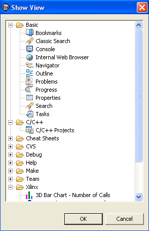

Selecting Views and Editors
To see a list of all views, from the menu bar choose Window > Show View > Others.

The following views comprise the C/C++ Projects View:
Basic views
- Console
- Displays the application's output.
- Navigator
- Displays the file system under the launchdir/workspace
directory.
- Outline
- Displays the functions and header files in your source
files. Open a source file in an editor to view its outline.
- Problems
- Displays problems.
- Properties
- Displays the name, path, size, permissions, and last modified date of the resource highlighted in the Navigator view.
- Search
- Displays the results of file or text searches.
C views
- C/C++ Projects
- Displays the processors in the system and your current projects. This is similar to the Navigator view, except that:
- It displays the processors and software
platforms/board support package projects in a hierarchial fashion
- Only projects and their contents are displayed
- You are able to view the "building blocks" of the files, such as the include files and the functions.
Make views
- Make Targets
- Lists your projects. To build a project, double-click on it..
Editor view
The Editor view is not listed under Window > Show View or Window > Show View > Others, it is opened whenever an editable file is opened from the C/C++ Projects or Navigator views.